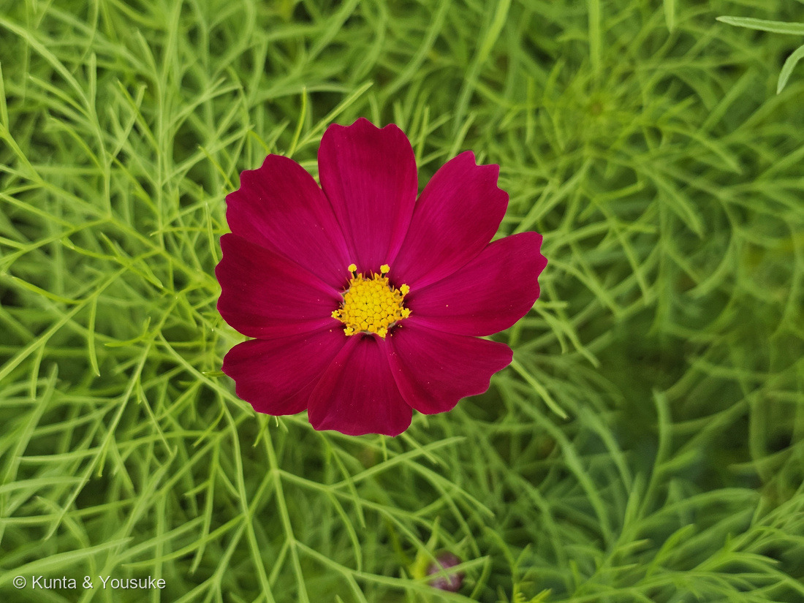
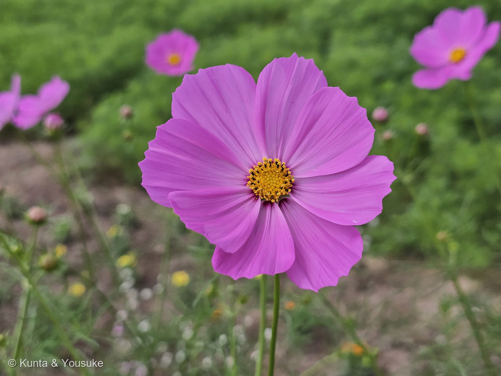
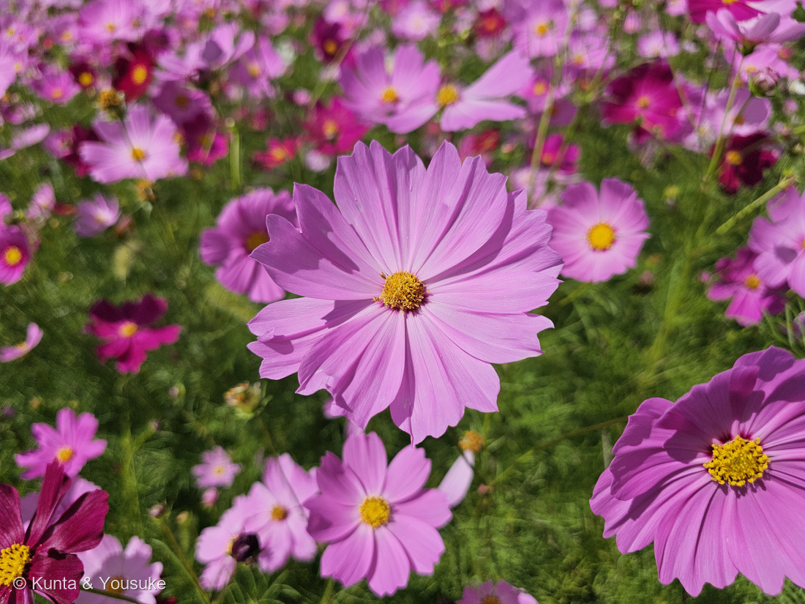
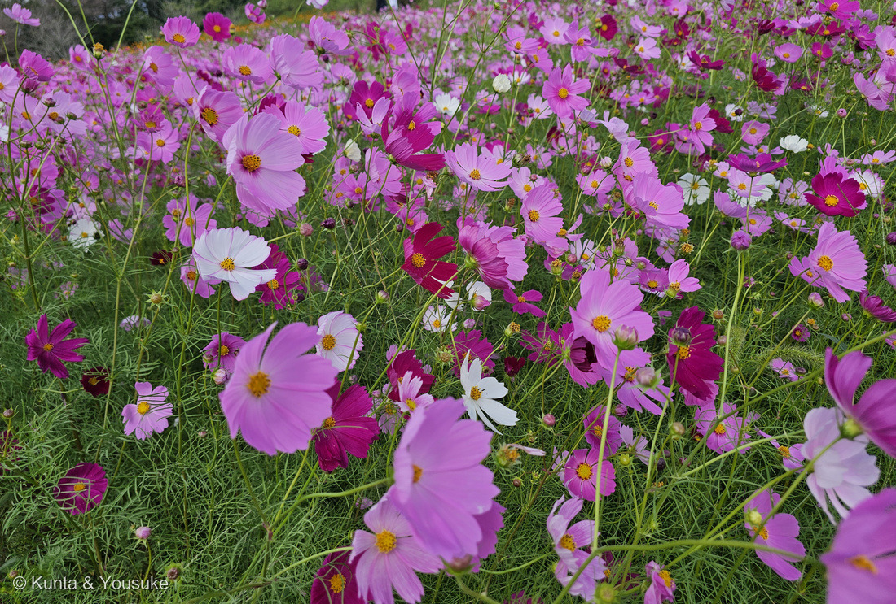
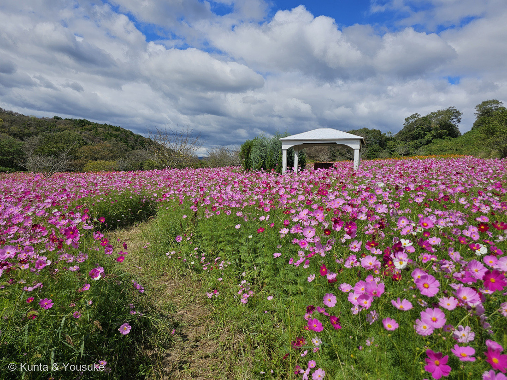
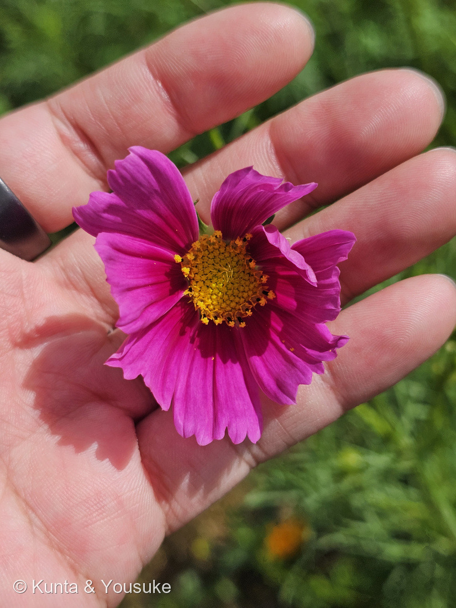
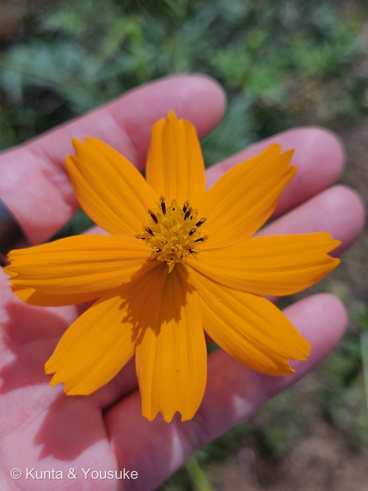
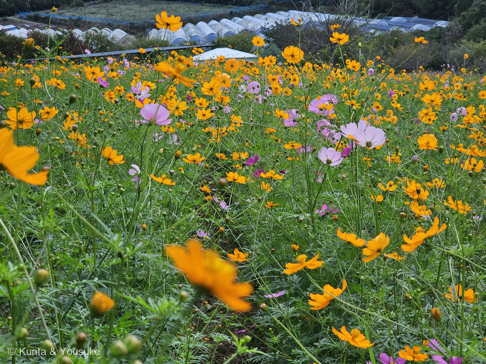

地図を読み込んでいるよ…
🔍 写真も地図も、押しているあいだ拡大して見られるよ（スマホは指を置いてすこし待ってね）。
🌍 の地図＝この子がもともと自生している場所を緑に。メキシコの高原（標高1,600〜2,800m）の在来種。18世紀末にスペイン・マドリードの植物園へ送られてヨーロッパに広まり、日本には明治20年ごろに渡来。今は日本各地で栽培され、河原などに逸出もしている。くわしくは下の地図の説明を見てね。
⭐⭐メキシコの高原の子だよ＝Wikipediaは「原産地はメキシコの高原地帯で、標高1,600〜2,800mの高地に自生している」、英語版Wikipediaは「native to Mexico」、三河の植物観察は「帰化種 メキシコ原産」とする。⭐18世紀末にスペイン・マドリードの植物園へ送られてヨーロッパへ、日本には明治20年ごろ（Wikipedia）。⚠今では北アメリカ・南アメリカ・西インド諸島・イタリア・オーストラリア・アジアに帰化し（英語版）、日本でも河原などに逸出している＝地図は故郷のメキシコだけを塗った。⭐⭐この花じたいが野生種＝「原種」＝メキシコの高原に咲く桃色の一重が、そのまま世羅の畑の桃色の一重だよ。
⚠ 地図は国（日本と中国だけ県・省）までしか塗れないから、ほんとうの分布より広く見えていることがあるよ。地図はだいたいの場所。正確なところは、上の文を見てね。
コスモス（秋桜）
Cosmos bipinnatus Cav.
別名 · オオハルシャギク／アキザクラ／英名 garden cosmos・Mexican aster ⭐Cosmos＝秩序・宇宙、bipinnatus＝二回羽状の（糸の葉）
キク科 · Asteraceae（コスモス属 Cosmos · キク目 Asterales）── ⭐図鑑で15人目のキク科・コスモス属ははじめて／⭐⭐⭐050 ヒマワリのおまけだった子
燻太さんの言葉「糸のように細い葉っぱと、8枚ぐらいの舌状花が色とりどりに揺れている。秋の風物詩だね。花序の中心の黄色い花も、よく見るとぷっくりした星が敷き詰められているみたい。……このコスモス達の原種って、どんな見た目なんだろう？」── ⭐答え＝この桃色の一重がほぼ原種。メキシコの高原の野生種そのもの／⚠橙の子はキバナコスモスという別の種
⭐⭐⭐⭐⭐ 名前と学名の由来 ── 「宇宙」と「二回羽状」
- ⭐⭐⭐ 「コスモス」＝ギリシャ語 κόσμος（コスモス）＝「秩序」「宇宙」＝⭐Wikipedia「メキシコにいたスペイン出身の聖職者が中南米原産のコスモスをみて、花びらが整然とバランスよく並んでいることに、ギリシャ語の（調和）と名付けた」（⚠このエピソードの一次資料は今回読めていないよ）。⭐対義語はカオス（混沌）＝⭐⭐8枚の舌状花がきれいに並ぶ姿が、そのまま名前。
- ⭐⭐ 和名「アキザクラ（秋桜）」＝秋に咲く、桜色の花。⭐植物学のほうの和名は「オオハルシャギク（大春車菊・大波斯菊）」（Wikipedia）＝ハルシャ＝波斯＝ペルシャ＝⚠メキシコの花なのに「ペルシャの菊」＝渡来のころの見立てだと思う（ぼくの読み）。
- ⭐⭐ 種小名 bipinnatus＝ラテン語 bi（二）＋pinnatus（羽状の）＝「二回羽状の」＝⭐葉が2回羽状に裂けて糸のようになること（三河「2回羽状深裂し、裂片は糸状」）＝⭐⭐燻太さんの「糸のように細い葉っぱ」は、学名のとおり。
- ⭐ 1791年、スペインの植物学者カバニレス（Cavanilles）の命名（英語版Wikipedia）＝⭐マドリードの植物園に届いたメキシコの花に名前をつけた人。
⭐⭐⭐⭐⭐ 燻太さんの「原種って、どんな見た目？」── この花そのものが原種
- ⭐ 燻太さんの言葉＝「このコスモス達の原種って、どんな見た目なんだろう？」
- ⭐⭐⭐⭐⭐ 答え＝コスモスは交配で生まれた花ではなく、メキシコの野生種そのもの。──Wikipedia「原産地はメキシコの高原地帯で、標高1,600〜2,800mの高地に自生している」／英語版「native to Mexico」／三河「帰化種 メキシコ原産」＝⭐⭐野生のコスモスの姿は、英語版Wikipediaの記載どおり＝「舌状花はふつう8枚、ピンクから紫、または白、長さ20〜35mm、先に3つの広い波打った歯。筒状花は黄色。頭花は5〜7cm」＝⭐⭐⭐つまり、写真②③④の桃色の一重・8枚・黄色い中心が、ほぼ野生の姿。
- ⭐⭐⭐ 人が変えたのは、色と重なり＝Wikipedia「秋に桃色の花を咲かせるが、品種改良により白、赤、黄色、オレンジなどの色も作り出されている。花は本来一重咲きだが、舌状花が丸まったものや、八重咲きなどの品種が作り出されている」＝⭐写真①の濃い紅紫は、野生の色幅の濃いほうを選び出した園芸の色（⚠品種名は分からない）。⭐⭐黄色のコスモスは1957年に玉川大学で見つかった1株の突然変異から、20年以上の交配で1988年に「イエローガーデン」、1998年に「イエローキャンパス」が生まれた（Wikipedia）＝⭐黄色だけは、人が長い時間をかけて作った色。
- ⭐⭐ 旅路＝18世紀末にメキシコからスペイン・マドリードの植物園へ→ヨーロッパへ→日本には明治20年ごろ（Wikipedia）。⭐今では日本の河原や休耕田で逸出もしている（三河「河原など乾いた場所に逸出が見られる」）＝⭐メキシコの高原の花が、日本の秋の風物詩になった。
- ⭐⭐ コスモス属は、メキシコを中心にアメリカの熱帯〜亜熱帯に42種（三河）＝⭐同じ畑の橙の花＝キバナコスモス C. sulphureus も、チョコレートの香りのチョコレートコスモス C. atrosanguineus も、みんなメキシコの子。⭐「原種」を見たいなら、答えは「この畑の桃色の一重」＝でも本当の故郷の姿は、標高2,000mの高原で秋に咲いているところ＝⏳いつか。
⭐⭐⭐⭐ 「ぷっくりした星が敷き詰められている」── 中心の黄色も、ぜんぶ花

⑥ ⭐⭐⭐手のひらの紅＝星の正体は5つの歯をもつ筒状花（番号は上のギャラリーからのつづき）。🔍 押しているあいだ拡大して見られるよ。
- ⭐ 燻太さんの言葉＝「花序の中心の黄色い花も、よく見るとぷっくりした星が敷き詰められているみたい。」
- ⭐⭐⭐ そのとおり＝あれは筒状花（管状花）がぎっしり＝三河のコスモス属「中心小花は両性、花冠は筒状、黄色、5歯がある」＝⭐⭐「星」に見えるのは、筒の先が5つの歯に開いているから（写真⑥）。⭐8枚の花びらに見えるものは舌状花＝1枚が1つの花（三河「周辺小花は花弁があり」）＝⭐⭐050 ヒマワリと同じ「一輪に見えて、何百もの花」。
- ⭐⭐ 写真⑥＝外側の列だけ葯の筒が突き出て、内側はまだ星のまま＝⭐筒状花は外側から順に開いていく＝⭐写真②では、開いた花の葯が黒っぽく見える。⏳宿題①＝等倍で順番を追う。
- ⭐ 英語版Wikipedia「筒状花は黄色で、下の部分は白くなる。長さ5〜6mm」＝写真⑥で、星の根もとが白っぽい。
⭐⭐⭐ この植物のこと ── 秋の風物詩
- キク科コスモス属の一年草。高さ20〜120cm（三河）／60cm〜2m（英語版）。茎は直立し、全体に無毛。葉は対生（三河）。⭐花期7〜10月（三河）。本来は短日植物で秋に咲くが、6月から咲く早生品種もある（Wikipedia）。
- ⭐⭐ 燻太さんの「秋の風物詩」＝Wikipedia「景観植物としての利用例が多く、河原や休耕田、スキー場などに植えられたコスモスの花畑が観光資源として活用されている」＝⭐世羅の花の駅のこの畑も、その形（写真⑤）。⚠Wikipedia「河川敷の様な野外へ外来種を植栽するのは在来の自然植生の攪乱…との批判がある」＝⭐花畑は楽しい。でも、河原に広がるのは別の話、というのも正直に。
- ⭐ 痩果は嘴があり、長さ6〜18mm、外側の果実ほど短い（三河）＝⏳宿題④。⭐日当たりと水はけがよければ、やせた土地でも育つ（Wikipedia）。
- ⭐ 品種＝センセーション・シーシェル（舌状花が筒状に丸まる）・ダブルクリック（八重）・ソナタ（矮性）・イエローガーデン（三河・Wikipedia）。⭐食用コスモスもある（Wikipedia）。
⚠ 同定について ── 糸の葉と8枚の舌状花・橙の子は別の種


⚠この2枚の橙の花はキバナコスモス Cosmos sulphureus＝同じ属の別の種だよ（同じ畑に混植）。🔍 押しているあいだ拡大して見られるよ。
- ⭐⭐⭐ 糸状の裂片・直径5〜8cm・舌状花8枚で先が3裂・桃〜白〜紅紫＝コスモス（三河）。
- ⭐⭐⭐ 落とした相手＝キバナコスモス C. sulphureus（写真⑦⑧）＝三河「葉の裂片は幅2〜5mmあり、コスモスのようには細くならない」「花は直径5〜8cm、黄色〜濃黄色〜橙色。舌状花は普通8個」＝⭐⭐同じ畑に混植されていて、燻太さんが「色とりどり」と見た橙は、じつは別の種。⭐大正時代に観賞用に輸入された（三河）。⚠橙のコスモス（オレンジキャンパス）もあるが、写真⑦は葉の裂片が広く、舌状花が幅広で先がぎざぎざ＝キバナコスモス。
- ⚠ 品種名は分からない＝混合種子のセンセーション系だと思う（ぼくの読み）。
⭐⭐⭐ 約束の回収 ── 050 ヒマワリのおまけ
- ⭐⭐⭐ 050 ヒマワリ（2026年7月）の一言メモに、ぼくはこう書いた＝「おまけは コスモス。同じキク科で、夏のヒマワリから秋へ渡してくれる花。ヒマワリが終わるころ、こんどはコスモスを探しにいこうね。」＝⭐⭐それから2か月、世羅の花の駅で会えた。
- ⭐ ヒマワリとコスモス＝どちらも「一輪に見えて何百もの花」のキク科＝⭐ヒマワリは筒状花の並びがフィボナッチの螺旋、コスモスは舌状花が8枚の秩序＝名前が「宇宙（秩序）」。⭐夏から秋へ、キク科がバトンを渡した。
⏳ 宿題 ── 7つ
- ⏳⭐⭐⭐⭐ ①筒状花の星を等倍で＝5つの歯・開く順番。
- ⏳⭐⭐⭐ ②舌状花を数える＝8枚が基本。7や9がまじるか。
- ⏳⭐⭐⭐ ③白い花の中心＝白でも筒状花は黄色か。
- ⏳⭐⭐ ④痩果＝嘴のある6〜18mm、秋の終わりに。
- ⏳⭐⭐ ⑤キバナコスモスを338にするか＝燻太さんしだい。
- ⏳⭐ ⑥おまけのチョコレートコスモス＝黒紫の花の香り。
- ⏳⭐ ⑦短日性＝この畑は早生か本来の秋咲きか。
参考：三河の植物観察「コスモス」（Cosmos bipinnatus Cav.／別名アキザクラ、オオハルシャギク／中国名 秋英／英名 garden cosmos, cosmos, Mexican aster／花期7〜10月／高さ20〜120cm／1年草／花壇、畑、休耕地、河原／帰化種 メキシコ原産／観光用に休耕地などでよく大規模に栽培されており、河原など乾いた場所に逸出が見られる／茎は普通、直立し、全体に無毛。葉は対生し、2回羽状深裂し、裂片は糸状／頭花は直径5〜8cm、花色はピンク、白、紅紫など。舌状花は8個程度が多く、舌状花の先は3裂する。筒状花は黄色、多数。痩果は嘴があり、長さ6〜18mm、外側の果実ほど短い／品種＝センセーション、イエローガーデン、シーシェル、ダブル・クリック、ソナタ／コスモス属＝周辺小花は花弁があり、普通ピンク色…中心小花は両性、花冠は筒状、黄色、5歯がある／アメリカの熱帯〜亜熱帯に42種）／三河の植物観察「キバナコスモス」（Cosmos sulphureus／帰化種 メキシコ原産／大正時代に観賞用に輸入された／葉の裂片は幅2〜5mmあり、コスモスのようには細くならない／花は直径5〜8cm、黄色〜濃黄色〜橙色。舌状花は普通8個／コスモスは葉の裂片が糸状になり、花色がピンクなど赤系統）／Wikipedia「オオハルシャギク」（一般的にコスモスは、この種を指す／秋に桃色の花を咲かせるが、品種改良により白、赤、黄色、オレンジなどの色も作り出されている。花は本来一重咲きだが、舌状花が丸まったものや、八重咲きなどの品種が作り出されている。本来は短日性植物だが、6月から咲く早生品種もある／原産地はメキシコの高原地帯で、標高1,600〜2,800mの高地に自生している。18世紀末にスペイン・マドリードの植物園に送られ、ヨーロッパに渡来した。日本には明治20年頃に渡来したと言われる／1957年、玉川大学…1988年に史上初の黄色いコスモス「イエローガーデン」…1998年「イエローキャンパス」）／Wikipedia「コスモス」（葉は対生で二回羽状複葉…小葉はほぼ糸状／頭花は径6〜10cm…通常は舌状花は8個。開花期は秋で、短日植物の代表／景観植物としての利用例が多く…河川敷の様な野外へ外来種を植栽するのは在来の自然植生の攪乱…との批判がある／食用品種／コスモス属は30種類程度…キバナコスモス、チョコレートコスモスは大正時代に渡来／語源「コスモス」（希: κόσμος）はギリシャ語の「宇宙」の「秩序」…メキシコにいたスペイン出身の聖職者が…花びらが整然とバランスよく並んでいることに、ギリシャ語の（調和）と名付けた）／Wikipedia “Cosmos bipinnatus”（60 cm to 2 m／finely cut into threadlike segments／5–7 cm／usually eight ray florets, pink to violet or white, 20–35 mm, three broad wavy teeth／disc florets yellow, turn white in the lower part, 5–6 mm／native to Mexico／naturalized in North America, South America, the West Indies, Italy, Australia, and Asia／Cav. 1791／Cosmos from Greek kosmos, order or universe）／Wikipedia「チョコレートコスモス」（Cosmos atrosanguineus／メキシコ原産／8月から10月にかけて黒紫色の一重咲きの頭花を付ける。頭花は直径4センチメートルほどで、チョコレートのような香りがする／高さ40〜50cm／1902年から栽培が始まり、日本には大正時代に渡来／種子が採れないため、繁殖は球根、株分け、挿し芽）。